What is this thing?
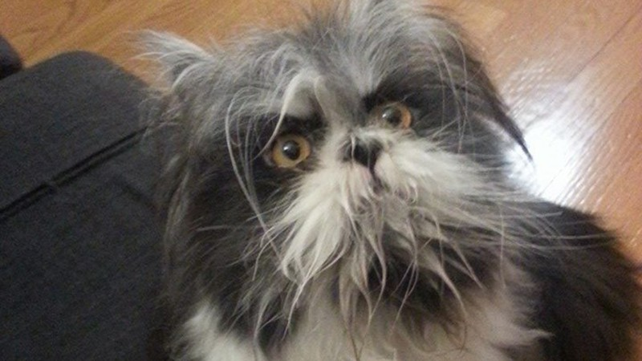I want to attempt two methods of discerning.
First some comparison data. I used 5 pictures of dogs and 5 pictures of cats. These pictures are compressed to 32px by 32px and to black and white. This makes the image pre-processing far easier. However, they are still clearly dogs and cats.
| 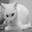 | 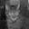 | 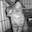 | 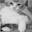 | 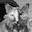 | 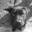 | 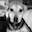 | 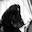 | 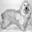 | 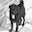 |
I also compressed the dogcat image:
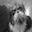One import step is normalizing and centering the data by subtracting the
mean and dividing by the standard deviation. ims is the
matrix of the images in the "training" set and what is the
matrix of the image of the ... thing.
ims = (ims - ims.mean()) / ims.std()
what = (what - ims.mean()) / ims.std()For the first method, the k Nearest Neighbors algorithm, I calculate the Euclidean distance of each unambiguos-species image to the canine feline image.
dists = np.sum(np.sum(np.power((ims- what),2), axis=1), axis=1)
I arbitralily chose k=3 as the number of neighbors that get
to vote on what species the animal is. Tuning this hyperparameter can
provide greater accuracy, but I am only interested in classifying this one
image and so herein chose not to.
My voting system was such that the closest neighboring image decided the species unless the other two votes both disagreed, in which case they would overrule.
sorts = np.argsort(dists)
votes = []
for i in range(3):
votes.append(classes[sorts[i]])
if votes[1] == votes[2] and votes[1] != votes[0]:
win_class = votes[1]
else:
win_class = votes[0]The result?
print(win_class)dog
For a second classification method, I still used the kNN algorithm,
but first performed PCA. The images began as 32*32=1024
dimensional objects. PCA reduces that dimensionality to the k
most important dimensions. More precisely, those dimensions which explain
some arbitrary portion of the variance. I chose k=3 for
consistency.
Most of the preprocessing remains the same for PCA and I can use
numpy's linalg.svd calculation to compute unitary matrix,
which is then sliced to the number of dimensions I want to reduce to.
Then I compute the dot product of the reduced unitary matrix and
image data to return the image data projected onto three dimensions.
U_red = U[:, :3]
ims_red = np.dot(ims_flat, U_red)
I then recompare the distances to from the dogcat to the training data.
One note, PCA was performed on all the data together and only afterwards
was the mystery animal's image separated from the comparison data. I used
the same k nearest neighbors with k=3 and voting rules
above. Again, the the images voted that the thing is a dog.
Neither of these algorithms is particulary good at classifying images, but the exercises were interesting to perform nonetheless. It turns out that the thing is called Atchoum and is a cat. It even has a website called www.atchoumthecat.com. It has hypertricosis which makes it hairy and thick-clawed.